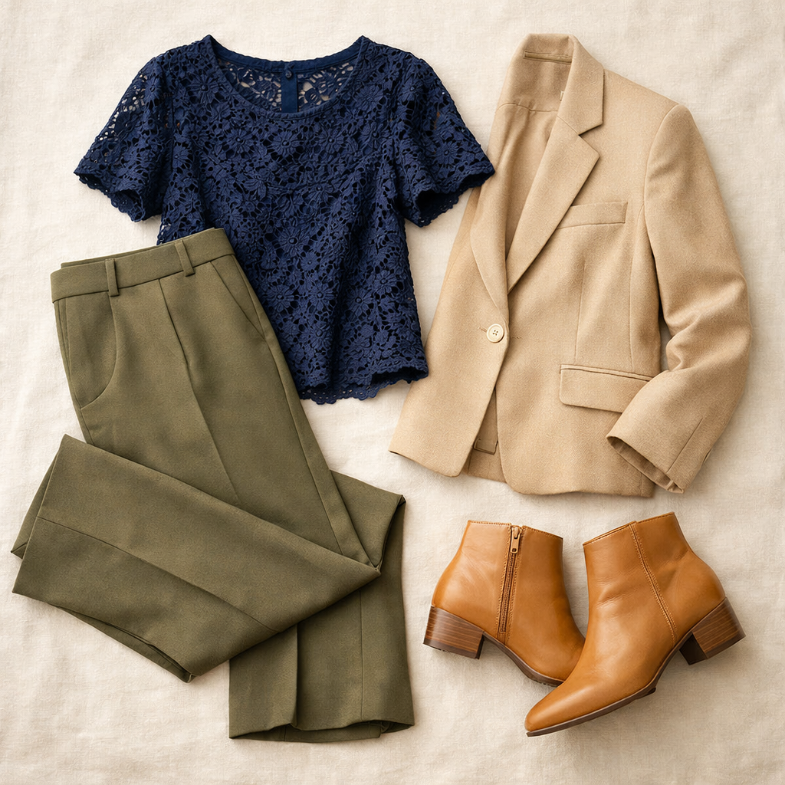

Ann Taylor
The Jayne Trouser
$119 (sale colors from $79.99; code SURPRISE50 for $50 off $100+)
Ann Taylor's #1 bestselling trouser. Slightly flared, mid-rise, tailored and fitted cut. 74% Polyester, 21% Rayon, 5% Spandex. Front zip with hook-and-bar closure, belt loops, off-seam pockets. A polished trouser with just enough flare to feel current.
Shop This ItemWhy This Pick
There's a reason this is Ann Taylor's #1 seller — the slightly flared leg is fashion-forward while being universally flattering. "Dried Moss" is a warm taupe-green that looks expensive and reads completely different from anything in your closet. This is the trouser that says "Executive Director who has taste AND doesn't overthink it." Pairs with everything from blouses to turtlenecks. Note: the Classic inseam runs 31.5" — slightly shorter than ideal at 5'7", but with a flared leg it still reads full-length and elegant.
Style It With Your Wardrobe
Flat-lay outfit ideas pairing this piece with items you already own

Warm Earthy Sophistication
Dried Moss Jayne trouser + Navy Daniel Rainn crochet blouse (#43) + Beige blazer (#208) + Tan booties (#504). The moss-navy pairing is rich and unexpected — earthy and polished at the same time. The beige blazer keeps it warm-toned and cohesive. This is the outfit that makes people ask "who is she?"